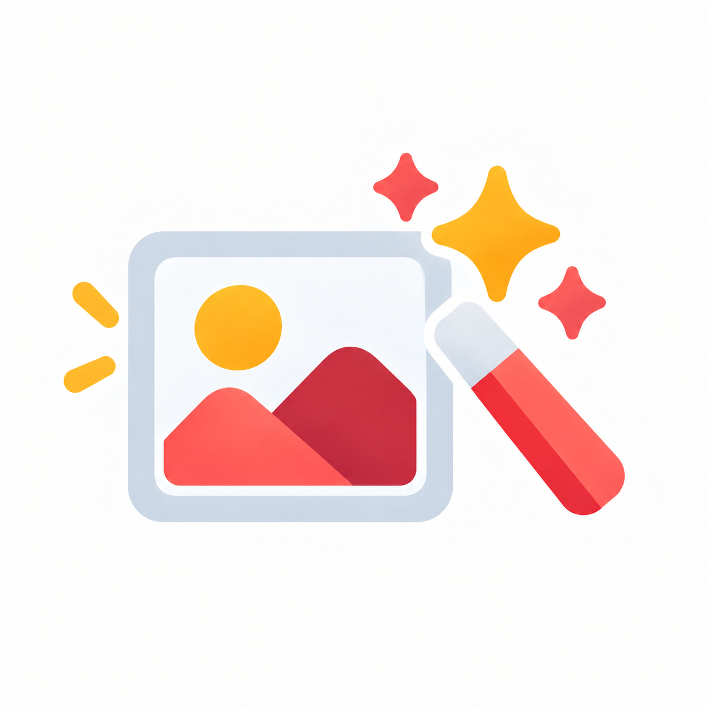

Förstå · formulera · bygg
AI-agenter
Förstå vad en agent gör, skriv instruktionerna och bygg ett första exempel i Copilot.

Planera · skapa · publicera
Skapa visuellt material
Del 01–06 visar en möjlig arbetsordning. Varje guide fungerar också fristående.

01 · Planera innehåll med AI
Välj mellan video eller bilder och få en enkel plan att börja från.
GuideÖppna →



04 · Skapa bilder som hör ihop
Använd ett visuellt recept och en referensbild för mer konsekventa resultat.
GuideÖppna →

05 · Skapa en enkel video i Google Vids
Sätt ihop bilder, text, övergångar och musik i Google Vids.
GuideÖppna →
06 · Gör materialet redo att publiceras
Välj bild eller video och gör en snabb slutkontroll.
GuideÖppna →